Animais Nordestinos
- 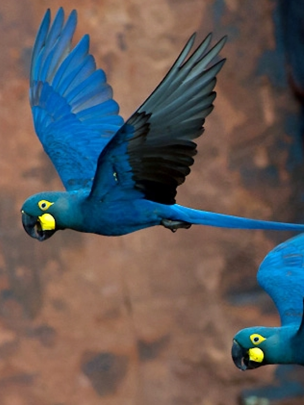
-

- 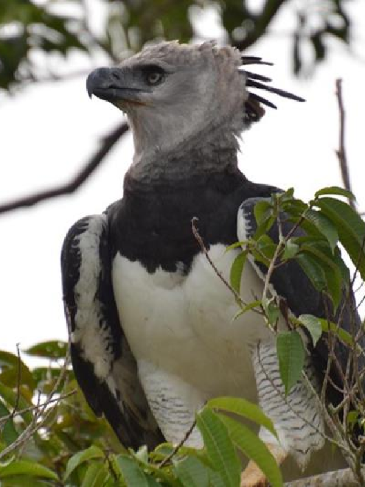
- 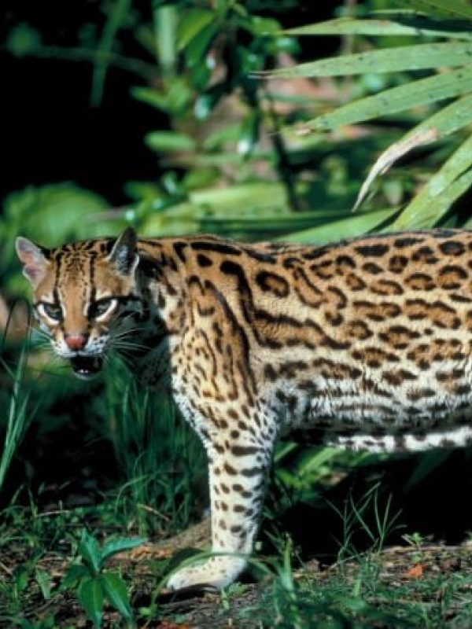
- 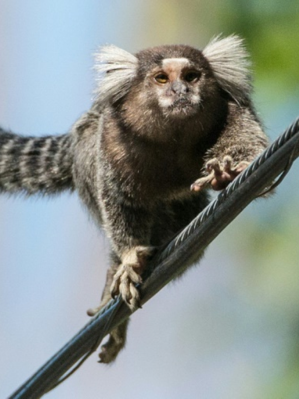
- 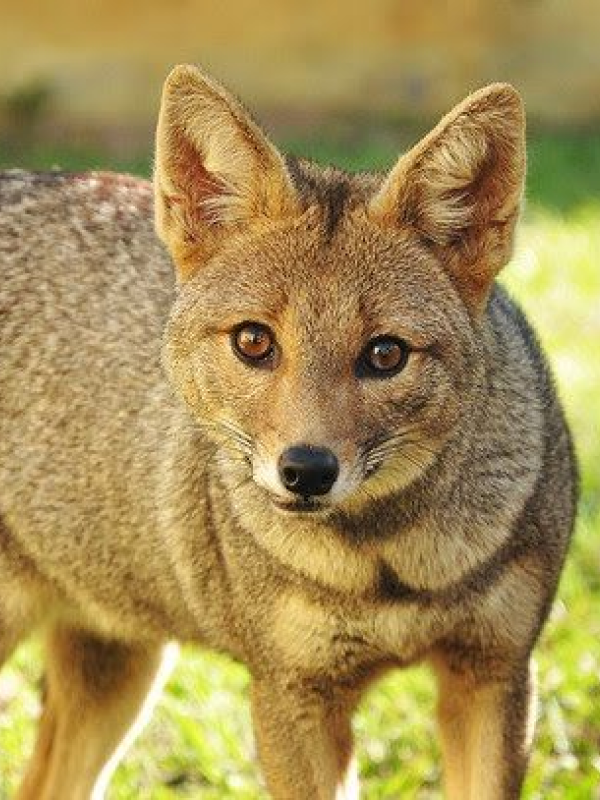
Arara-azul-de-Lear
A Arara-azul-de-Lear (Anodorhynchus leari) é uma espécie magnífica de arara que habita a região nordeste do Brasil, especialmente a Caatinga.
Infelizmente, essa espécie enfrenta ameaças significativas de extinção, principalmente devido à perda de habitat, caça ilegal e tráfico de animais.
Uma curiosidade notável é que, ao contrário de outras araras-azuis, a de Lear é conhecida por preferir áreas mais secas e áridas, adaptando-se de maneira única ao ambiente específico da Caatinga.
Os esforços de conservação e reintrodução na natureza têm sido cruciais para proteger e preservar essa espécie rara e contribuir para a sustentabilidade do ecossistema nordestino.
Mico-leão-da-cara-dourada
O Mico-leão-da-cara-dourada (Leontopithecus chrysomelas) é uma espécie cativante de primata que tem seu lar nas florestas da Mata Atlântica na região nordeste do Brasil.
Destacando-se por sua pelagem dourada e distintiva face clara, esses micos-leões são notáveis não apenas por sua beleza, mas também por sua estrutura social única. Vivendo em grupos familiares coesos, esses primatas são liderados por uma fêmea, e todos os membros contribuem para a criação dos filhotes.
Infelizmente, o Mico-leão-da-cara-dourada enfrenta ameaças significativas devido à perda de habitat e à fragmentação das florestas, tornando-se uma espécie vulnerável.
Programas de conservação têm desempenhado um papel vital na proteção desses primatas, envolvendo esforços para preservar seus habitats naturais e reintroduzir micos-leões criados em cativeiro de volta à natureza.
Gavião-real
O Gavião-real (Harpia harpyja) é uma majestosa e impressionante ave de rapina que encontra seu lar nas densas florestas tropicais do nordeste do Brasil, incluindo a Amazônia e partes da Mata Atlântica.
Com uma envergadura de asas que pode ultrapassar os dois metros, o gavião-real é considerado uma das maiores águias do mundo.
Alimentando-se principalmente de mamíferos arbóreos, como macacos e preguiças, o Gavião-real desempenha um papel crucial no controle populacional desses animais e na manutenção do equilíbrio ecológico.
Apesar de sua importância e beleza, a espécie enfrenta ameaças devido à perda de habitat e à caça ilegal. Felizmente, esforços de conservação estão em andamento para proteger essas aves magníficas e garantir a preservação de seus habitats naturais no nordeste do Brasil.
O Gato-maracajá
O Gato-maracajá (Leopardus wiedii) é um felino fascinante que habita o nordeste do Brasil, adaptando-se a uma variedade de ecossistemas, incluindo a Caatinga e partes da Mata Atlântica.
Com sua pelagem acinzentada e manchas escuras que lembram um leopardo, o gato-maracajá é notável por sua agilidade e comportamento solitário.
Sua dieta versátil inclui desde pequenos mamíferos e aves até insetos e répteis. Além disso, sua habilidade de subir em árvores o torna um predador eficiente.
Apesar de sua adaptabilidade, o gato-maracajá enfrenta desafios devido à perda de habitat e à caça ilegal. Esforços de conservação são cruciais para proteger essa espécie e garantir sua presença contínua na rica biodiversidade do nordeste brasileiro.
Sagui-de-tufos-brancos
O Sagui-de-tufos-brancos (Callithrix jacchus), também conhecido como "mico-leãozinho", é uma espécie cativante de primata que habita o nordeste do Brasil, incluindo a Caatinga e áreas de transição para a Mata Atlântica.
Apresentando uma estrutura social complexa, vivem em grupos familiares cooperativos, onde todos os membros ajudam nos cuidados com os filhotes.
Com uma dieta diversificada que inclui frutas, insetos e pequenos vertebrados, os saguis-de-tufos-brancos desempenham um papel importante na dispersão de sementes e na manutenção do equilíbrio ecológico.
No entanto, a degradação do habitat e a captura para o comércio de animais de estimação representam ameaças significativas a essa espécie. A compreensão e preservação de seu ecossistema são fundamentais para garantir a sobrevivência desses primatas encantadores no nordeste brasileiro.
Raposa-do-campo
A Raposa-do-campo (Lycalopex vetulus) é uma espécie fascinante de raposa que encontra seu habitat no nordeste do Brasil, especialmente na Caatinga.
Com uma pelagem que varia de tons de cinza a ferrugem, essa raposa exibe uma notável adaptação às condições áridas e semiáridas da região.
Seu porte pequeno e pernas longas facilitam sua movimentação ágil em terrenos variados.
A raposa-do-campo possui uma dieta diversificada, alimentando-se de pequenos mamíferos, aves, répteis e frutas.
Sua importância ecológica na regulação de populações de presas e na dispersão de sementes sublinham a necessidade de esforços de conservação para proteger a raposa-do-campo e seu papel vital nos ecossistemas do nordeste brasileiro.
FAQ
- Por qual motivo eles são importantes?
- Cada uma das espécies mencionadas anteriormente desempenha um papel crucial nos ecossistemas em que habitam, contribuindo para a biodiversidade e o equilíbrio ecológico
- Qual a idade que esses animais podem chegar ?
- A expectativa de vida dos animais pode variar significativamente de espécie para espécie, e até mesmo dentro de uma mesma espécie, a longevidade pode ser influenciada por fatores como habitat, dieta, cuidados humanos (no caso de animais em cativeiro) e ameaças ambientais. Aqui estão algumas estimativas gerais de expectativa de vida para as espécies mencionadas anteriormente: Arara-azul-de-Lear (Anodorhynchus leari): Em estado selvagem, a expectativa de vida pode variar, mas estima-se que essas araras possam viver entre 20 a 30 anos. Mico-leão-da-cara-dourada (Leontopithecus chrysomelas): Em habitat natural, esses micos-leões podem viver até 15 anos. Gavião-real (Harpia harpyja): Em estado selvagem, os gaviões-reais podem viver em torno de 25 a 35 anos. Gato-maracajá (Leopardus wiedii): Em ambiente selvagem, sua expectativa de vida geralmente varia de 10 a 12 anos, mas alguns indivíduos podem viver mais tempo. Sagui-de-tufos-brancos (Callithrix jacchus): Em cativeiro, esses saguis podem viver em média de 8 a 10 anos, enquanto em ambiente selvagem, sua expectativa de vida é geralmente menor. Raposa-do-campo (Lycalopex vetulus): A expectativa de vida dessa raposa em ambiente selvagem é estimada em torno de 4 a 6 anos.
- Como protegê-los?
- A proteção dessas espécies e de seus habitats envolve esforços coordenados em várias frentes, incluindo conservação de habitat, medidas legais, educação ambiental e envolvimento da comunidade.
- 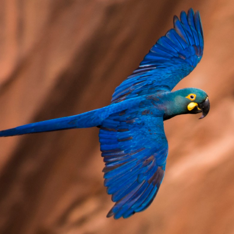
- 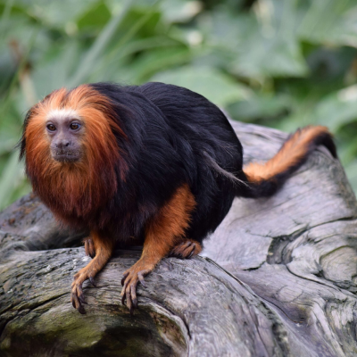
- 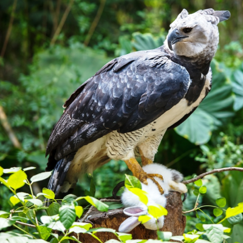
- 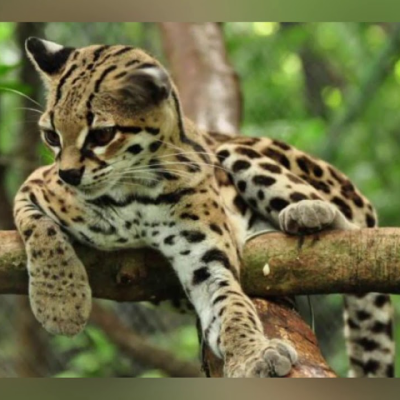
- 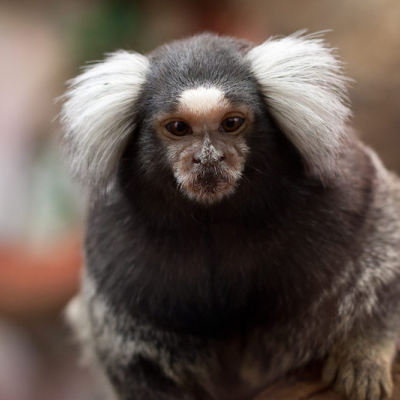
- 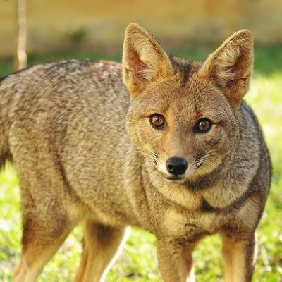
Números
Contato

- contato@luiz-augusto.com
- +55 (83) 9999-9999
- Centro, nº 21
- Campina Grande - PB
- Doe 0 bitcoin para nos ajudar
- Seg à Sex das 8 às 18